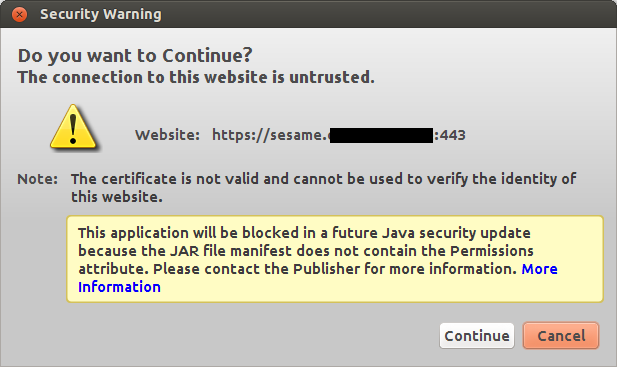
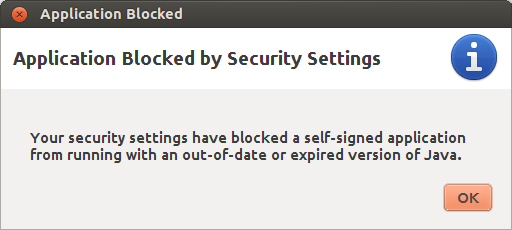
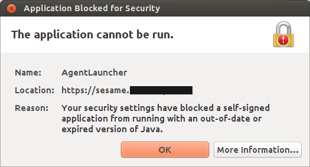

20140211 (Tuesday, 11 February 2014)¶
Cannot connect to Sesame VDI server¶
One of my customers wants me to occasionally log into their system using a combination of Sesame, Adito and Citrix, I ignore the details, but basically it requires some Java. At some moment it says:
Launch Adito Agent Some features of the Adito require the use of the Adito Agent which should now launch.
And recently it then started to not start a Citrix VDI but to say:
  And finally:
com.sun.deploy.security.BlockedException: Your security settings have blocked a self-signed application \
from running with an out-of-date or expired version of Java.
at com.sun.deploy.security.SandboxSecurity.showBlockedDialog(Unknown Source)
at com.sun.deploy.security.TrustDecider.askUser(Unknown Source)
at com.sun.deploy.security.TrustDecider.validateChain(Unknown Source)
at com.sun.deploy.security.TrustDecider.isAllPermissionGranted(Unknown Source)
at sun.plugin2.applet.Plugin2ClassLoader.isTrustedByTrustDecider(Unknown Source)
at sun.plugin2.applet.Plugin2ClassLoader.getTrustedCodeSources(Unknown Source)
at com.sun.deploy.security.CPCallbackHandler$ParentCallback.strategy(Unknown Source)
at com.sun.deploy.security.CPCallbackHandler$ParentCallback.openClassPathElement(Unknown Source)
at com.sun.deploy.security.DeployURLClassPath$JarLoader.getJarFile(Unknown Source)
at com.sun.deploy.security.DeployURLClassPath$JarLoader.access$1000(Unknown Source)
at com.sun.deploy.security.DeployURLClassPath$JarLoader$1.run(Unknown Source)
at java.security.AccessController.doPrivileged(Native Method)
at com.sun.deploy.security.DeployURLClassPath$JarLoader.ensureOpen(Unknown Source)
at com.sun.deploy.security.DeployURLClassPath$JarLoader.<init>(Unknown Source)
at com.sun.deploy.security.DeployURLClassPath$3.run(Unknown Source)
at java.security.AccessController.doPrivileged(Native Method)
at com.sun.deploy.security.DeployURLClassPath.getLoader(Unknown Source)
at com.sun.deploy.security.DeployURLClassPath.getLoader(Unknown Source)
at com.sun.deploy.security.DeployURLClassPath.getResource(Unknown Source)
at sun.plugin2.applet.Plugin2ClassLoader$2.run(Unknown Source)
at java.security.AccessController.doPrivileged(Native Method)
at sun.plugin2.applet.Plugin2ClassLoader.findClassHelper(Unknown Source)
at sun.plugin2.applet.Applet2ClassLoader.findClass(Unknown Source)
at sun.plugin2.applet.Plugin2ClassLoader.loadClass0(Unknown Source)
at sun.plugin2.applet.Plugin2ClassLoader.loadClass(Unknown Source)
at sun.plugin2.applet.Plugin2ClassLoader.loadClass0(Unknown Source)
at sun.plugin2.applet.Plugin2ClassLoader.loadClass(Unknown Source)
at sun.plugin2.applet.Plugin2ClassLoader.loadClass(Unknown Source)
at java.lang.ClassLoader.loadClass(ClassLoader.java:358)
at sun.plugin2.applet.Plugin2ClassLoader.loadCode(Unknown Source)
at sun.plugin2.applet.Plugin2Manager.initAppletAdapter(Unknown Source)
at sun.plugin2.applet.Plugin2Manager$AppletExecutionRunnable.run(Unknown Source)
at java.lang.Thread.run(Thread.java:744)
This was with Oracle’s Java activated on my Ubuntu Saucy. Tried to see what happens with OpenJDK. But unfortunately:
# update-java-alternatives -l
java-1.7.0-openjdk-i386 1071 /usr/lib/jvm/java-1.7.0-openjdk-i386
java-7-oracle 1073 /usr/lib/jvm/java-7-oracle
# update-java-alternatives -s java-1.7.0-openjdk-i386
update-alternatives: error: no alternatives for apt
#
I guess that this is a problem on my machine after upgrading to saucy, similar to java alternatives missing after upgrade to precise
Asked Google:
Okay, I remove all Java environments, development kits, and all IcedTea plugins from my machine and restart at the beginning. Only one little problem (which I ignored):
update-binfmts: warning: current package is oracle-java7, but binary format already installed by openjdk-6; not removing.
Restart. In the beginning there was OpenJDK:
# aptitude install openjdk-7-jdk
# aptitude install icedtea-plugin
And wow! now everything seems to work! Maybe I’ll never need any Oracle Java anymore!
Endspurt¶
There was a bug in lino.modlib.beid: the generated <applet>
tag for The EIDReader applet did not set codebase, and thus OpenJava
failed to load the third-party jar files. It is strange that this
problem does not seem to have occured earlier.
Added lino.projects.docs.settings.demo to fabfile.py in lino, in
order to avoid error messages when generating the docs.
lino.modlib.households.fixtures.demo caused fab initdb in
lino to fail because it sorted existing persons by birth_date and
this field doesn’t exist by default. Sort by -id instead. This might
change some outputs in tested documents.
The EIDReader applet deployment¶
I finally decided to add the signed third-party jars to the eidreader repository. The reasons why this had to wait until now were my fears of (1) doing something illegal and/or (2) opening a possibility for others to peruse my signature. Fear (1) is explained in third_party_jars. Fear (2) has gone away after checking documents like Signing Applets Using RSA Certificates. Yes, anonymous people can now see and download files like commons-logging.jar which contains a set of code and my signature which confirms that this code can be trusted. They cannot extract my signature from that file and use it to sign something else.
Things are now getting much easier, and that’s good because they are complicated enough by themselves.
One of my stumble stones while testing on testlino:
AttributeError
AttrDict instance has no key 'nationalNumber' (keys are valid_until, last_name, national_id, ResidencePermitType, date_issued, birth_place, remark2, remark3, nationality, remark1, remark4, first_name, gender, other_names, card_id, reader, birth_date)
TRACEBACK:
File "/usr/local/django/testlino/env/lib/python2.6/site-packages/django/core/handlers/base.py", line 115, in get_response
(...)
File "/home/lsaffre/repositories/lino/lino/modlib/beid/__init__.py", line 95, in card2client
kw.update(national_id=ssin.format_ssin(str(data.nationalNumber)))
File "/home/lsaffre/repositories/atelier/atelier/utils.py", line 50, in __getattr__
name, ', '.join(self.keys())))
It seems that an old version of eidreader is still stored somewhere... How to flush the Java cache? stackoverflow did not help me this time. I even started a new entry How to flush the Java cache? in /java.
After having tested all these, I found the solution: I had inserted my Estonian id card instead of the Belgian one. Die dümmsten Fehler sind am schwersten zu finden.